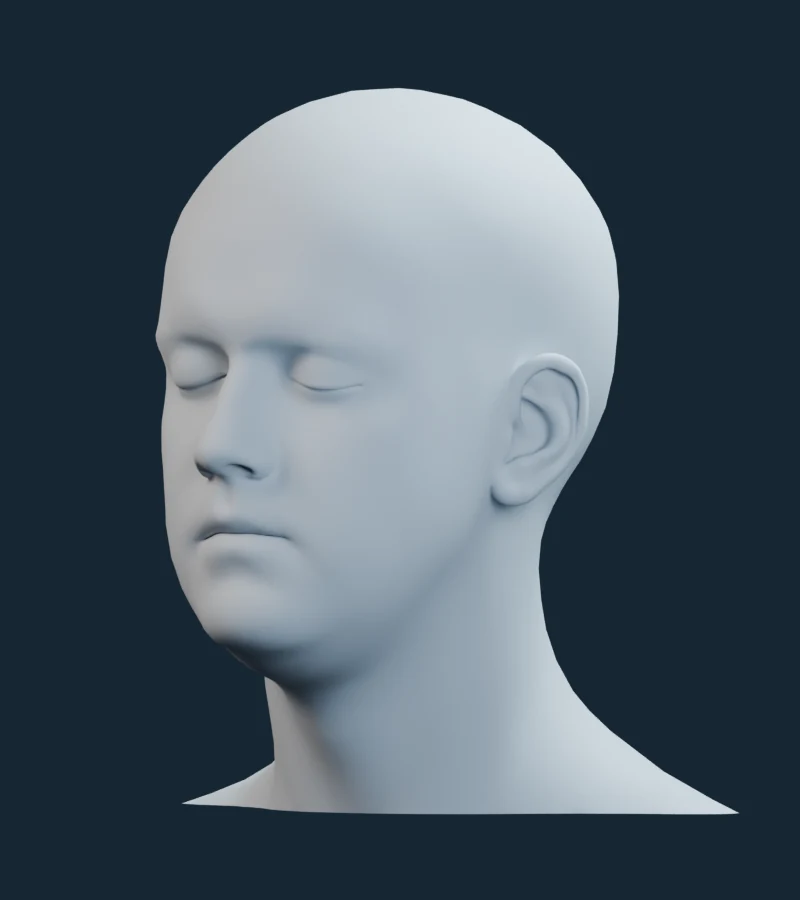

ตัวอย่างการใช้ Skill
ตรวจรูปทรง ก่อนมองผิว
โมเดลเดียวกันในสามมุมมองการทำงาน ตั้งแต่ clay ตรวจปริมาตรใบหน้า ไปจนถึงพื้นผิวและโครงสร้าง mesh ที่หมุนตรวจได้จริง
กำลังโหลดโมเดลและพื้นผิว…
เปิดโมเดลไม่ได้ โปรดลองโหลดหน้าใหม่ หรือดูภาพตรวจรูปทรงด้านล่างแทน
ภาพจาก Blender
รูปทรงเดียวกัน หลายมุม
ภาพ clay จาก mesh จริง ปิด color และ normal map เพื่อให้เห็นปริมาตรของใบหน้า



ตัวอย่างที่ส่งมอบ
ได้อะไรจาก workflow นี้
เริ่มจากโมเดลสแกนที่มีสิทธิ์ใช้ ตรวจ clay หลายมุม ปรับวัสดุให้ส่งออกกับ glTF ได้ แล้วตรวจไฟล์และเปิดดูบนเว็บ

ขอบเขตและที่มา
ใช้ Infinite, 3D Head Scan by Lee Perry-Smith ภายใต้ CC BY 3.0 จากชุดตัวอย่าง Three.js r180 นำมาจัดวัสดุ สร้างภาพตรวจ และส่งออกสำหรับเว็บ ไม่ได้ปั้นศีรษะนี้ใหม่จาก prompt
ตัวอย่างเป็นสแกนที่หลับตา ไม่มี rig, ลูกตาแยกชิ้น หรือทรงคิ้วสลับได้ ความสูงประมาณ 0.205 เมตรเป็นการปรับสเกลเพื่อสาธิต ไม่ใช่ขนาดร่างกายที่วัดจริง ตัดส่วนไหล่ออกและเปิดขอบคอด้านล่างไว้ จึงไม่ใช่โมเดลปิดสำหรับพิมพ์ 3D และไม่มีข้อมูล landmark อิสระสำหรับรับรองสัดส่วน